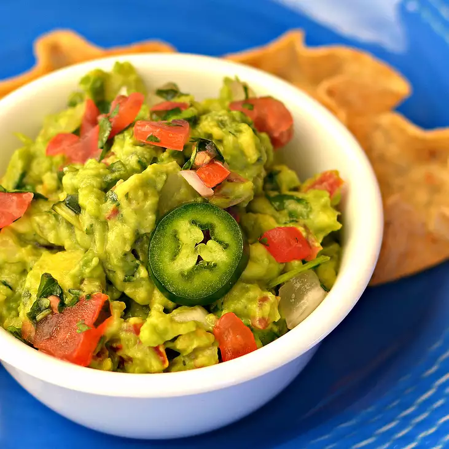

Mexican Guacamole

This is a recipe to make traditional mexican guacamole.
Gucamole is the staple for any chip snack and party. Learning to make guacamole will
make any part you attend more enjoyable, especially when snacking on chips
Ingredients:
- 2 avacados, peeled and pitted
- 1 cup chopped tomatoes
- 1/4 cup chopped onion
- 1/4 cup chopped cilantro
- 2 tablespoons lemon juice
- 1 jalapeno pepper, seeded, and minced (optional)
- Salt and ground black pepper for taste
Steps:
- Mash avacados in a bowl until creamy
- Mix tomatoes, onion, cilantro, lemon juice, and jalapeno pepper into mashed
avacodos until well combined; season with salt and black pepper